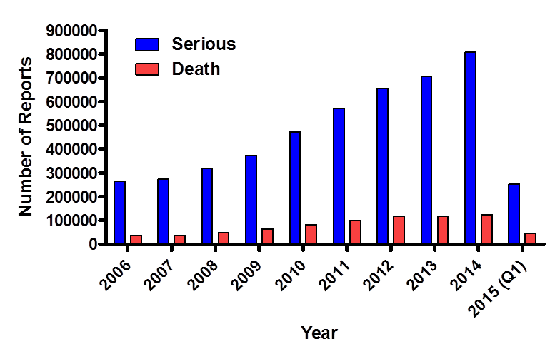
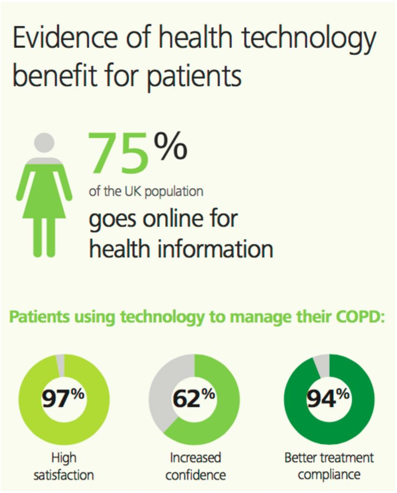

In our project we were interested in analyzing the possibilities of detecting adverse drug reactions through social media mining.
Adverse Drug Reactions (ADRs) = harmful effects caused by the intake of a medical drug. According to the FDA Adverse Effects Reporting system, the number of hospitalizations and even deaths caused by ADRs is ever increasing and has reached over one million cases in the US as of 2014.
Source: FAERS, fda.gov, as of Nov. 2015.
Thus, the detection of these events plays a significant role for improving human health. The assessment and detection of adverse reactions for prescription drugs starts at the clinical trial level and continues after market release through national reporting tools that allow manufacturers and the public to report on ADRs. However, due to the limitations of clinical trials and the voluntary nature of public reporting tools, the actual detection of the adverse reactions is incomplete and not timely. Social media brings about a new perspective in detecting ADRs. People search and share information about their experiences, which also includes diseases, symptoms and treatments.
Example:
Source: Deloitte, 2015
However, social media is unstructured user generated data that also brings about challenges for algorithm applications. A few of the challenges are: misspellings or colloquialisms, commercial information instead of personal experience, several terms used that do not correspond to lexicon terms.
In this project we wanted to approach these challenges and investigate in how far social media data can help in ADRs detection.
We chose to focus on twitter and set the following goals: